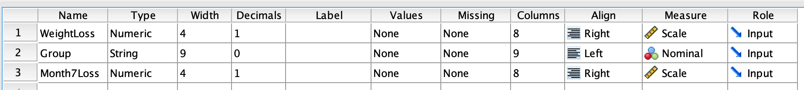
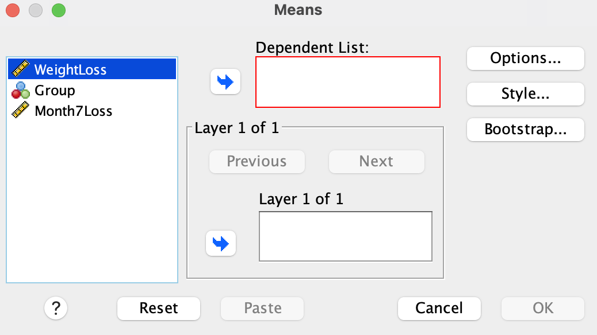
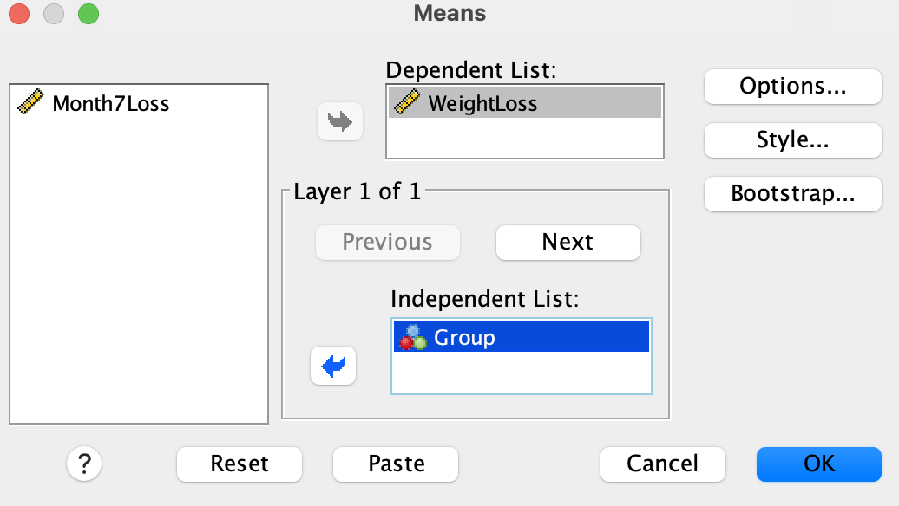
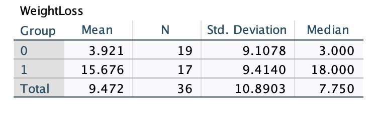
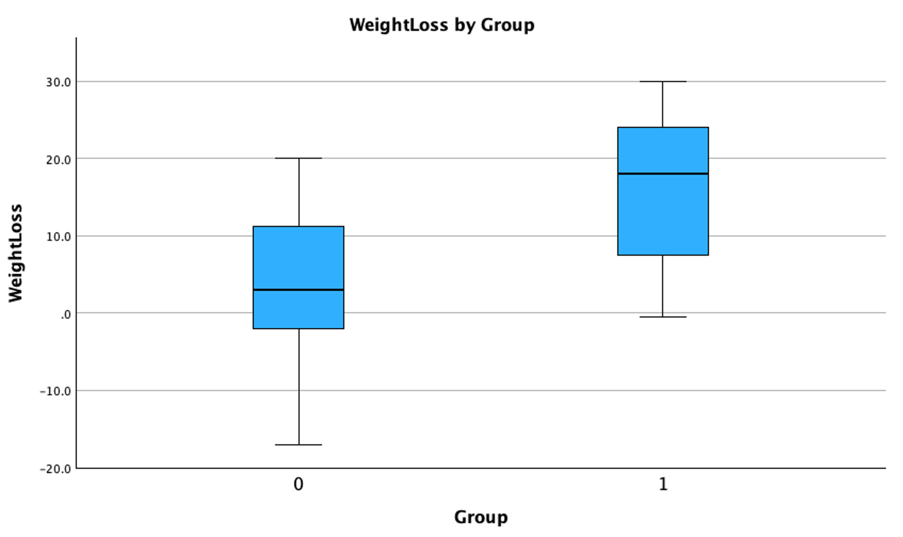
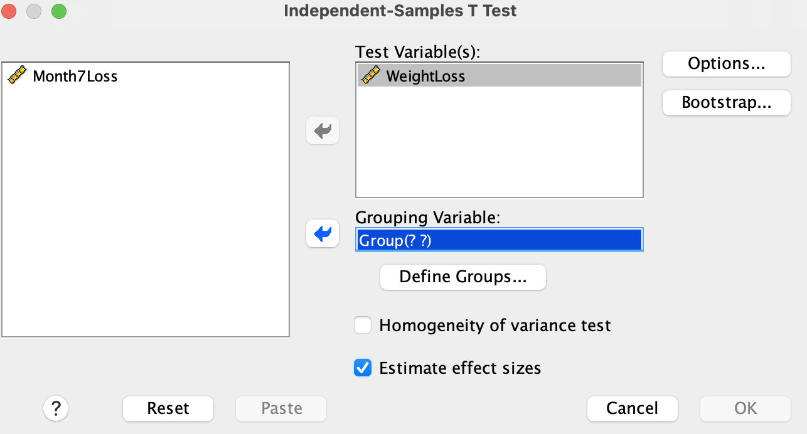
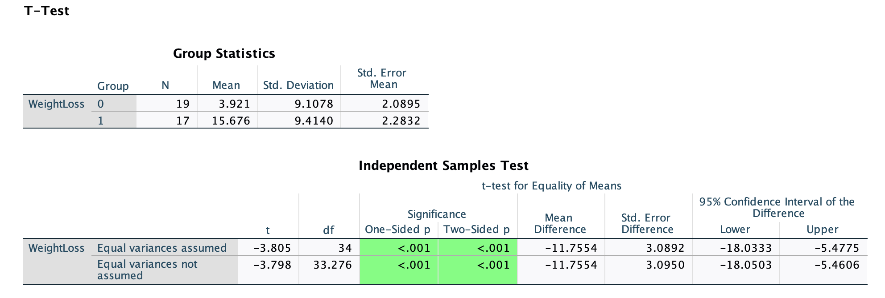

Lab 6: Inference for Two Independent Means: Independent Samples t-test
Part 1: Scenario & Overview
In the previous lab, we performed a one-sample t-test to determine if the average weight loss for individuals in the incentive group was significantly different from the known population mean of 10 pounds. In this lab, we will perform a two-sample t-test to determine if there is a significant difference in average weight loss between the incentive group and the control group.
Here is the research question we will be investigating:
Does the new weight loss program with financial incentives result in a significantly higher average weight loss than the traditional weight loss program without financial incentives?
Here is the scenario to that we will be working with:
A fitness center wants to determine if using financial incentives is associated with greater weight loss among participants. The fitness center has a new weight loss program that offers financial incentives to individuals who meet their weight loss goals. The center wants to determine if the new program is more effective than the traditional weight loss program that does not offer financial incentives.
Study Design: The researchers recruited 38 individuals who wanted to lose weight and randomly assigned them to either an incentive group (given financial incentives) or a control group (not given any financial incentives). After 4 months, the researchers recorded the amount of weight lost (before - after) by each individual. Three months after the initial 4 months, they also recorded the weight lost by each individual again to see if the weight loss was maintained. However, financial incentives were only given during the first 4 months.
By the end of this lab, you should be able to:
- State null and alternative hypotheses for an independent samples t-test.
- Perform an independent samples t-test in SPSS.
- Interpret the results of an independent samples t-test in APA style.
Stating Hypotheses
Null Hypothesis: There is no difference in average weight loss between individuals in the incentive group and the control group.
In symbols: \(H_0: \mu_1-\mu_2 = 0\)
Alternative Hypothesis: There is a difference in average weight loss between individuals in the incentive group and the control group.
In symbols: \(H_1: \mu_1-\mu_2 \neq 0\)
Checking Assumptions
There are two main assumptions to consider before running a one-sample t-test:
Independence: The individuals in the study must be independent, meaning that each participant or observation belongs to only one group. In this study, the individuals were randomly assigned to either the incentive or control group, so this assumption is satisfied.
Normality: The distribution of the dependent variable (weight loss) should be approximately normal for each group. We will check this assumption using visualizations and summary statistics in the next section. With large samples (n > 30), the t-test is robust to violations of normality, but with smaller samples, it is important to check this assumption.
No Significant Outliers: The dependent variable should not have any significant outliers. We will check for outliers using box plots in the next section.
Homogeneity of Variance: The variance of the dependent variable (weight in this case) should be approximately equal for both groups.
Part 2: The Data
Importing Data into SPSS
The data set is available in the following link. Download the data.
After downloading the dataset, import it into SPSS, using the following steps:
File > Import Data > CSV Data…, browse to the file location, and click OK on the import wizard (accept the default settings).
Make sure the measurement scales are set as follows: WeightLoss = Scale, Group = Nominal, Month7Loss = Scale.
See the screenshot below for reference:

The variable description is as follows:
Group = Whether someone was in the Incentive or Control group. 0=Control group, 1=Incentive group.
Weightloss = The amount of weight lost by each individual at the 4-month follow-up.
Month7Loss = The amount of weight lost by each individual at the 7-month follow-up
Click on data view to confirm that you have 38 individuals in the data set. The WeightLoss variable is calculated as the difference between the weight before and after the 4-month period. Negative values (e.g., case 14) indicate that the individual gained weight.
The goal is to determine if the average initial weight loss (Weightloss) for individuals in the incentive group is significantly different from the average weight loss for individuals in the control group.
Part 3: Exploratory Analysis
Before running the t-test, we will perform some exploratory analysis to understand any patterns/trends in the data.
Summary Statistics
First, we want to generate a table of summary statistics for the WeightLoss variable. Run the following steps:
Analyze > Compare Means and Proportions > Means.
The following dialog box should appear:

Send the WeightLoss variable into the Dependent List box and the Group variable into the Independent List box. See below:

Click OK.
Optionally, you may click on Options during the variable selection to select step above for additional summary statistics (e.g., median, range, etc.) to include in the output.
You should see the following table in the output window:

The table shows the the individuals in the control group (recorded as 0) on average lost \(M = 3.921\) lbs with \(SD = 9.1\) lbs, while the individuals in the incentive group (recorded as 1) on average lost \(M = 15.68\) lbs with \(SD = 9.41\) lbs. Based on this information, we can see that the variance in weight loss is similar between the two groups, hence satisfying the assumption of homogeneity of variance.
Visualizations
We can create a side-by-side box plot to visualize the distribution of the WeightLoss variable for both groups. Run the following steps:
- Graphs > Chart Builder > Boxplot.
- Select the Simple Boxplot from the gallery and drag the plot into the preview window.
- Drag the
WeightLossvariable into the Y-axis box and theGroupvariable into the X-axis box. - Click OK.
Yous should see the following box plot in the output window:

How does the spread of the weight lost at the fourth month (WeightLoss variable) compare between the incentive (Group 1) and control (Group 0) groups?
Part 4: Running the t-test
To run the independent samples t-test, follow these steps:
- Analysis > Compare Means and Proportions > Independent Samples T Test.
- Send the
WeightLossvariable into the Test Variable(s) box and theGroupvariable into the Grouping Variable box. See below:

- Next, click on Define Groups and enter 0 for Group 1 and 1 for Group 2.
- Click Continue.
The following tables should pop up in the output window:

Part 5: Output Interpretation
The output shows both summary statistics (mean, standard deviation, and standard error) for each group and the results of the independent samples t-test. The t-test results (second table, first row) include the t-statistic, degrees of freedom, p-value (one-sided and two-sided), and the confidence interval. In this case, we use the first row because it assumes equal variances.
The P-value measures the chance (or probability) of obtaining a difference in average weight loss of 11.75 lbs or more extreme if the null hypothesis (average difference = 0) is true. Our obtained P-value is extremely small (less than the significance level of 0.05), so we reject the null hypothesis and conclude that the data provides strong evidence to suggest that there is a difference in average weight loss between individuals who get incentives and those who don’t. In particular, individuals who get incentives lose more weight on average than those who do not.
The 95% confidence interval for the difference in average weight loss between the two groups is [-18.033 to -6.05] lbs. This means that we are 95% confident that the true difference in average weight loss between the two groups is between -18.033 lbs and -6.05 lbs. Since this confidence interval does not include 0, it provides further evidence to reject the null hypothesis.
“A research report typically presents the descriptive statistics followed by the results of the hypothesis test and the measures of effect size (inferential statistics).” - See p. 343 of the textbook.
Here is how to write up the results of the independent samples t-test for our scenario above:
The participants who received financial incentives lost more weight \((M = 15.68, SD = 9.41)\) than those who did not receive financial incentives \((M = 3.92, SD = 9.10)\). The mean difference was significant, \(t(36) = -3.805, p < .001, d = -1.27\).
Take-Home Lab Exercises
In today’s lab exercises, you will perform an independent samples T-test as demonstrated in the above exploration work.
The research question being examined is whether in the general population, there is a difference in average weight loss at the seventh month (Month7Loss) between individuals who receive incentives and those who don’t.
Question 1
What is the population of interest in the scenario? State the null and the alternative hypotheses in words and in symbols.
Question 2
Create side-by-side box plots to visualize the distribution of the weight loss at the seventh month (Month7Loss) for the incentive and the non-incentive groups. How do these distributions compare?
Question 3
Run an independent samples t-test to test the whether, in the overall population, there is a difference in average weight loss at the seventh month between the incentive group and the non incentive group.
What is the P-value for the two-sided test? What does this mean in the context of the research question?
State and interpret the 95% confidence interval for this scenario.
What is the effect size (Cohen’s d) for this test? To find this, please check the table near the bottom of your t-test output. How would you interpret this effect size in the context of the scenario at hand?
Question 4
Write an APA-style interpretation of the results of the independent samples t-test performed in exercise 3 above.
Lab 6: Inference for Two Independent Means: Independent Samples t-test – PSYC 20700 - Statistics in Psychology Lab 6: Inference for Two Independent Means: Independent Samples t-test – PSYC 20700 - Statistics in Psychology Lab 6: Inference for Two Independent Means: Independent Samples t-test – PSYC 20700 - Statistics in Psychology PSYC 20700 - Statistics in Psychology Homepage for PSYC 207 - Statistics in Psychology, Fall 2026. Homepage for PSYC 207 - Statistics in Psychology, Fall 2026.